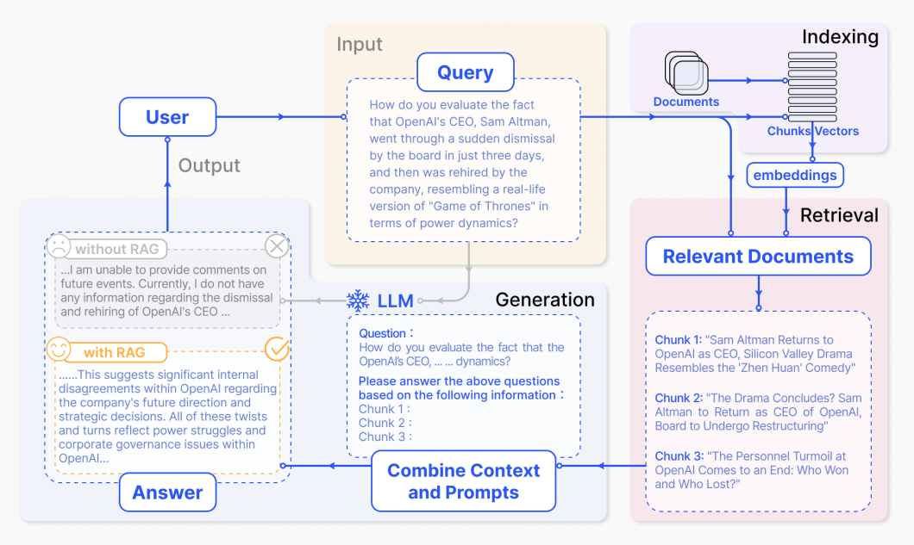

Generative AI
In this tutorial, we will cover as much Text GenAI practices as we can.
Objectives
- Basic Prompt Engineering Techniques
- Python Programming over locally hosted LLMs
- Retrieval Augmented Generation
- Advanced Techniques
1. Text Generation in ChatGPT / HuggingChat
While OpenAI and HuggingFace offer Web APIs to interact with a cloud-hosted LLM, they operate on a pay-per-use model. We are going to use their user interfaces, which are free of use. You are free to create an account on any of the following:

Exercise - Getting used to Chat UI
- Open your preferred Chat Interface.
- Generate a response to "Explain "Generative AI" like I'm 5 years old".
- GPT systems can be seen as human conversation mimicks, so they perform better with clear, concise prompts relevant to the ongoing conversation and not dealing with open-ended, overly broad prompts.
- Being a conversational interface, you are free to expand on the conversation by asking for a list of examples, more details on a specific point or advice to get into the field
Exercise - Classification
Write a prompt that is able to classify the following sentences as neutral, negative or positive:
- I loved Star Wars so much!
- I really don't like NLP (ಥ _ ಥ)
- I'm hungry
Exercise - Coding
- Write a prompt that, given as input a
departmentstable with columns[DepartmentId, DepartmentName], and astudentstable with columns[DepartmentId, StudentId, StudentName], generates a MySQL query for all students in the SISE Department - Write a prompt that converts the SQL query to Python SQLAlchemy code
- Write a prompt that explains each line of the previous Python code
Exercise - Text Use Cases
Copy & paste the abstract or first paragraph of an ArXiv paper about LLMs for the following exercise
- Write a prompt that extracts a list of LLMs from the abstract, and outputs it as a list of bullet points
- Write a prompt that summarizes the abstract into 3 sentences

2. Python Programming over locally hosted LLMs
Closed-source models liks GPT-4 perform well but are limited in terms of transparency and privacy.
You can read this retrospective of Open Source LLMs for an history of published open LLMs, or the Open LLM Dashboard for a recap of their performance
Here are some noteworthy examples available on Huggingface Hub
- for text generation:
- Mistral-7B
- Phi 2
- Vicuna
- Llama 3.1
- Nous-Hermes
- for code generation:
- CodeLlama
- Deepseek Coder
- StarCoder
- for complex reasoning:
- WizardLM
In this section, we will host our own LLMs and interact with those as if they were exposed from an OpenAI REST API, whose specification has become a template.
a. LMStudio

LMStudio is an easy-to-use, powerful local GUI to run LLMs on your laptop as long as the model has an available GGUF format.
- GGUF is a tensor format that allows CPU inferencing with GPU offloading, making it easy to run a LLM in full CPU mode.
LMStudio uses llama.cpp as backend to run LLMs on CPU with GPU offloading.
Exercise - Playing with LMStudio
- Install LMStudio
- Search for
Mistralmodels, for a list of all available Mistral models on Huggingface Hub stored in GGUF format. - From the
Mistral-7B-Instruct-v0.3-GGUFresult, download themistral-7b-instruct-v0.3.Q4_K_M.ggufmodel. - Open a conversation thread and start chatting with the newly downloaded Mistral model.
- Download a
Deepseek Codermodel. Have it generate SQLAlchemy code like in the previous example.

On choosing a model
- Models come in
BaseandInstructversions.- The
Basemodel is designed for general-purpose conversations, where the LLM responds to the user's messages in a natural way. For exampleWhat is Generative AI?. - The
Instructmode is trained to follow the user's instructions. For exampleSummarize the following text: {text}
- The
- In the
Mistral-7Bname,7Brefers to the model size, here being 7 billion parameters. The parameter count is a rough indicator of its performance on various natural language processing tasks, at the expense of being way harder to store in RAM/vRAM. - In general models are trained in FP16 (half-precision), so each weight occupies 16 bits. No one runs such big models, but rather run quantized models by converting the weights from higher precision data types to lower-precision ones. : Q8 (single byte float quant), Q5, Q4 and Q2.
- Llama3-8B in FP16 takes around 15 GB, whereas Llama3-8B in Q4 takes only 5 GB
- There is quality loss in quantization, but you win on resources and speed of inference. It is still debatable whether it's better to use larger quantized models VS smaller non-quantized models. Unfortunately you will have to test that yourself. Research usually points to larger quantized model outperforming smaller non-quantized in quality and speed.
Exercise - REST API with LMStudio
Feel free to use a Jupyter Notebook, VSCode script or Streamlit app for the following exercise.
- Prerequisites: create or reuse a conda environment, install
openai. - In the
Local Servertab, start a OpenAI REST API hosting your previously downloaded Mistral-7B. - Edit and run the following code, copied directly from the
chat (python)tab of the Local Inference Server:
# Example: reuse your existing OpenAI setup
from openai import OpenAI
# Point to the local server
client = OpenAI(
base_url="http://localhost:1234/v1",
api_key="not-needed",
)
completion = client.chat.completions.create(
model="local-model",
messages=[
{"role": "system", "content": "Always answer in rhymes."}, # the system prompt helps steer the behavior of the model
{"role": "user", "content": "Introduce yourself."} # start of the conversation
],
temperature=0.7,
)
print(completion.choices[0].message)
It may be a bit slow to run, after all you are running on CPU, but logs should appear in LMStudio before the result appears in your script.
Stop the server when you're done.
b. Ollama in Docker
Ollama is a tool that allows you to run open-source large language models (LLMs) locally on your machine.
Ollama cannot be used on Windows yet, apart if you're using WSL2...fortunately, you are now Docker experts  and Ollama has an official Docker image
and Ollama has an official Docker image
Exercise - Playing with Ollama
Feel free to use a Jupyter Notebook, VSCode script or Streamlit app for the following exercise.
- Prerequisites: create or reuse a conda environment, install
ollama. - Run ane ollama docker container in the background:
docker run -d -p 11434:11434 --name ollama ollama/ollama.- Ollama exposes a REST API by default, check http://localhost:11434/ to see if Ollama is running.
- Check for available models here.
- Run
docker exec ollama ollama pull mistralto execute the download mistral model command inside the container. - Run
docker exec -it ollama ollama run mistralto open an interactive shell to Mistral. As previously, chat with Mistral about anything.

- Interact with your downloaded Mistral through the REST API:
import requests
import json
# URL for the Ollama server
url = "http://localhost:11434/api/generate"
# Input data (e.g. a text prompt)
data = {
"model": "mistral",
"prompt": "What is Generative AI?",
"stream": True, # try both True and False values and see the difference
}
# Make a POST request to the server
response = requests.post(url, json=data)
# Check if the request was successful
if response.status_code == 200:
### TODO: Parse and print the response!
else:
print("Error:", response.status_code)
- Interact with your downloaded Mistral through the
ollamaclient library:
import ollama
response = ollama.chat(
model='mistral',
messages=[
{
'role': 'user',
'content': 'Why is the sky blue?',
},
]
)
print(response['message']['content'])
- Still experimental, interact with your downloaded Mistral through the
openaiclient library:
from openai import OpenAI
client = OpenAI(
base_url='http://localhost:11434/v1',
api_key='ollama', # required, but unused
)
response = client.chat.completions.create(
model="mistral",
messages=[
{"role": "system", "content": "You are a helpful assistant."},
{"role": "user", "content": "Who won the world series in 2020?"},
{"role": "assistant", "content": "The LA Dodgers won in 2020."},
{"role": "user", "content": "Where was it played?"}
]
)
print(response.choices[0].message.content)
c. Chatbot UI with Chainlit
Chainlit is a  Python library to easily build conversational UIs, very similar to Streamlit.
Python library to easily build conversational UIs, very similar to Streamlit.
Exercise - Playing with Chainlit
- Depending on your preference, start a Mistral REST API from LMStudio or Ollama.
- Edit this code to get a quick chatbot running with your locally hosted Mistral.
- I haven't had time to test, but those should worK:
- Add streaming to your app by pushing
streaming=Trueto the chat completion - You can attach files to extract info from and use as context for the prompt. Try attaching one of your PDFs, parse it with PyPDF and send the whole content as additional context of your prompt.
- Add streaming to your app by pushing
3. Retrieval Augmentated Generation (RAG)
While LLMs are trained on a great deal of data, they are not trained on your data, which may be private or specific to the problem you’re trying to solve. They also suffer from outdated references, hallucinations and untraceable reasoning process.
It is possible but demanding to fine-tune a model on your own data, as you need to format it for your own use case. Therefore Retrieval-Augmented Generation (RAG) emerges as a promising solution where you incorporate knowledge for the given prompt as additional context extracted from external documents.

The RAG process comprises of four parts:
- Loading: Collecting data from multiple data sources, in multiple formats, with associated metadata
- Indexing: Split the documents into chunks of data, create and store vector embeddings out of each document with associated metadata from file
- Retrieving: For the given user prompt, retrieve the document chunks closely related to the promt by comparing vector embeddings
- Generating: Use the chunks as context for the answer generation

We will recreate a full RAG setup using open source components:
- Sentence Transformers as the embedding model
- Mistral (or Llama 3) as the LLM, through LMStudio or Ollama REST API
- ChromaDB as a vector store to save vector embeddings
- Llama-index to orchestrate the RAG
a. Embeddings
An embedding is a vector (list) of floating point numbers. The distance between two vectors measures their relatedness. Small distances suggest high relatedness and large distances suggest low relatedness.
You can use BERT, S-BERT, or OpenAI's text embeddings.
Exercise - Understand Embeddings
- Create or reuse a conda environment, install
sentence-transformers. - You may also need to upgrade numpy if you get
RuntimeError: Numpy is not available. - Run some code to generate embeddings for different sentences:
from sentence_transformers import SentenceTransformer
model = SentenceTransformer("all-MiniLM-L6-v2")
# Our sentences we like to encode
sentences = [
"This framework generates embeddings for each input sentence",
"Sentences are passed as a list of strings.",
"The quick brown fox jumps over the lazy dog.",
]
# Sentences are encoded by calling model.encode()
embeddings = model.encode(sentences)
# Print the embeddings
for sentence, embedding in zip(sentences, embeddings):
print("Sentence:", sentence)
print("Embedding:", embedding)
print("")
- Compute Vector similarities between embeddings to see how close the original sentences are. Edit the sentences to get a feel for how the cosine similarity changes:
from sentence_transformers import SentenceTransformer, util
model = SentenceTransformer("all-MiniLM-L6-v2")
# Sentences are encoded by calling model.encode()
emb1 = model.encode("This is a red cat with a hat.")
emb2 = model.encode("Have you seen my red cat?")
cos_sim = util.cos_sim(emb1, emb2)
print("Cosine-Similarity:", cos_sim)
- In a new
datafolder, download Paul Graham's essay. In a new Python script:- Create an embedding for each paragraph.
- Then for a given question like
What was my professor's name, compare cosine similarity of the question to every paragraph of the Paul Graham essay, print the 5 most relevant paragraphs with the smallest cosine distance to the user prompt.
For any given document, we extract all the content from it, split it into "chunks" like paragraphs and create a vector embedding of each chunk, using a local model or OpenAI's embedding model.
Given a user prompt, we then find the chunks that are closely related to the prompt by looking for the chunk with minimum cosine similarity.
b. Llama-index quickstart
Llama-Index is a framework for LLM-based applications with context augmentation through retrieving information from external documents.
LlamaHub will contain all integrations of Llama-index to different LLMs, embedding models and vector stores.
In this section (a rewriting of the starter tutorial and the customization tutorial), we use Llama-index to:
- Split documents into chunks
- Create vector embeddings for each chunk
- Save each chunk and vector embedding in a vector database
- For a user prompt, retrieve the most relevant chunks of information and inject them in the context
Exercise - The RAG Chatbot quickstart that doesn't work
- Install
llama-index,llama-index-embeddings-huggingface,llama-index-llms-ollama,chromadb,llama-index-vector-stores-chroma,transformers - Make sure in a new
datafolder, you have Paul Graham's essay.
- Make sure your local Mistral-7B is up using Ollama.
- In a new
app.pyfile, build an index over the documents in thedatafolder. The code automatically reads the file, splits into chunks and creates embeddings for each chunk Beware, the code won't work right now because Llama-index is configured to use the OpenAI API by default to create the embeddings and generate the final response. We will change that just after.
Beware, the code won't work right now because Llama-index is configured to use the OpenAI API by default to create the embeddings and generate the final response. We will change that just after.
from llama_index.core import SimpleDirectoryReader
from llama_index.core import VectorStoreIndex
# index will contain all document chunks with embeddings
documents = SimpleDirectoryReader("data").load_data()
index = VectorStoreIndex.from_documents(documents)
# To query your newly created index, you would then run the following:
query_engine = index.as_query_engine()
response = query_engine.query("What did the author do growing up?")
print(response)
The above code doesn't work, we need to point the embedding model to use a local Huggingface model, and the LLM to our local Ollama/Mistral-7b instead of the remote OpenAI.
- You can check the list of models usable for embeddings and the list of LLMs for generating the response
Exercise - Configuring embeddings for the RAG Chatbot
- Let's configure the embedding model. In a script, test the following code
from llama_index.embeddings.huggingface import HuggingFaceEmbedding
embed_model = HuggingFaceEmbedding(model_name="BAAI/bge-small-en-v1.5")
print(embed_model.get_text_embedding("Hello world"))
- Configure the indexing phase of your
app.pyllama-index script to use the local Huggingface embedding:
from llama_index.core import SimpleDirectoryReader
from llama_index.core import VectorStoreIndex
from llama_index.core import Settings
from llama_index.embeddings.huggingface import HuggingFaceEmbedding
# define embedding function
Settings.embed_model = HuggingFaceEmbedding(model_name="BAAI/bge-small-en-v1.5")
# index will contain all document chunks with embeddings
documents = SimpleDirectoryReader("data").load_data()
index = VectorStoreIndex.from_documents(
documents,
)
# To query your newly created index, you would then run the following:
query_engine = index.as_query_engine()
response = query_engine.query("What did the author do growing up?")
print(response)
Exercise - Configuring LLM for the RAG Chatbot
- Let's configure the LLM. In a script, test the following code:
from llama_index.llms.ollama import Ollama
llm = Ollama(
request_timeout=300.0,
model="mistral",
)
print(llm.complete("Hello world"))
- Configure the generation phase of your
app.pyllama-index script to use your local Ollama LLM:
from llama_index.core import SimpleDirectoryReader
from llama_index.core import VectorStoreIndex
from llama_index.core import Settings
from llama_index.embeddings.huggingface import HuggingFaceEmbedding
from llama_index.llms.ollama import Ollama
# define embedding function
Settings.embed_model = HuggingFaceEmbedding(model_name="BAAI/bge-small-en-v1.5")
# define LLM
Settings.llm = Ollama(
request_timeout=300.0,
model="mistral",
)
# index will contain all document chunks with embeddings
documents = SimpleDirectoryReader("data").load_data()
index = VectorStoreIndex.from_documents(
documents,
)
# To query your newly created index, you would then run the following:
query_engine = index.as_query_engine()
response = query_engine.query("What did the author do growing up?")
print(response)
Exercise - Configuring vector database storage for the RAG Chatbot
- Configure the indexing phase of your
app.pyllama-index script to use a persistent chromaDB database:
import chromadb
from llama_index.core import SimpleDirectoryReader
from llama_index.core import StorageContext
from llama_index.core import VectorStoreIndex
from llama_index.core import Settings
from llama_index.embeddings.huggingface import HuggingFaceEmbedding
from llama_index.llms.ollama import Ollama
from llama_index.vector_stores.chroma import ChromaVectorStore
# define embedding function
Settings.embed_model = HuggingFaceEmbedding(model_name="BAAI/bge-small-en-v1.5")
# define LLM
Settings.llm = Ollama(
request_timeout=300.0,
model="mistral",
)
# create ChromaDB database
#chroma_client = chromadb.EphemeralClient() # can use this if you want an in-memory test
chroma_client = chromadb.PersistentClient(path="./chroma_db")
chroma_collection = chroma_client.get_or_create_collection("quickstart")
# index will contain all document chunks with embeddings
documents = SimpleDirectoryReader("data").load_data()
# set up ChromaVectorStore and load in data
vector_store = ChromaVectorStore(chroma_collection=chroma_collection)
storage_context = StorageContext.from_defaults(vector_store=vector_store)
index = VectorStoreIndex.from_documents(
documents,
storage_context=storage_context,
)
# To query your newly created index, you would then run the following:
query_engine = index.as_query_engine()
response = query_engine.query("What did the author do growing up?")
print(response)
- Upon running the script, check for the existence of the
chroma_dbfolder containing the embeddings.
Challenge - Putting it all into Chainlit
- Copy-paste the llama-index code into your Chainlit app from the previous section. You can now chat with any document inside the
datafolder
RAG pipelines are currently the preferred way to get a chatbot to behave your way. There are many ways to optimize your RAG pipeline, you can read the basic guide and advanced guide for strategies to improve your RAG. They won't be necessary for the next section, as we are more concerned in building a useable Minimum Viable Chatbot Product.
4. Building your first custom chatbot
Challenge - Build your own chatbot over external documents
Tackle one of the following problems (or create one yourself!) using both external documents embedded in a vector store, and a well defined system prompt to tune the model behavior, using Chainlit or Streamlit as an UI
- You are a looking for an internship. Build a chatbot that loads some Linkedin job openings and guide the student sharing experiences/skills, side projects and short-term career dream
- You are looking for a fancy restaurant. Build a chatbot that loads multiple menu PDFs and guide the user that shares tastes and moods to the chat.
Exercise -  The Final Dockerization
The Final Dockerization 
If you want to deploy this to the Cloud, well its DOCKER time  put everything in a Docker Compose and push your project to Github.
put everything in a Docker Compose and push your project to Github.
- Using only the
README.mdI should be able to properly run the project. - Go read your MLOps scikit-learn project for a good template. Imagine your scikit-learn trained model and your vector store of embeddings are the same, you can create them externally and load them into the image at build time. You could also mount them as a volume when running the container.
- You can store the full conversation of a session in FastAPI, add every user prompt and chat response inside and reinject the full conversation back into Ollama.

- A more modular version would be to put ChromaDB in a separate container, that way you can switch vector stores or update the index more in a separate volume. Split out ChromaDB into its own container and follow this link to connect llama-index to a remote ChromaDB
GOOD LUCK!

===== Bonus Challenges =====
5. Advanced Techniques
Generative Text AI is still in its infancy, a lot of techniques are still appearing. Here's a list of techniques to keep in mind for the more advanced use cases.
a. Advanced Prompting
Exercise - Test the following in ChatGPT / HuggingChat
- Few-shot prompting: Instead of just asking for a classification, give examples.
- Prompt:
Classify the sentiment of these texts: 1. "I am happy" -> Positive, 2. "I am sad" -> Negative, 3. "I just finished the exam" -> ? - Read more
- Prompt:
- Chain of Thoughts (CoT): Ask the model to explain its reasoning step-by-step.
- Prompt:
Solve this math problem. explain your reasoning step by step. 15 * 15 + 4 = ? - Read more
- Prompt:
- ReAct: A pattern where the model acts, observes the result, and thinks again.
- Prompt:
Question: What is the elevation range for the area that the eastern sector of the Colorado orogeny extends into? Thought 1: I need to search Colorado orogeny, find the area that the eastern sector extends into, then find the elevation range of the area. Action 1: Search[Colorado orogeny] ... - Read more
- Prompt:
b. Augmenting LLM with external tools
LLMs are great at text but bad at math, real-time data, and specific formatting. Function Calling (or Tool Use) allows us to give "hands" to the LLM.
Exercise - Function Calling with NexusRaven
Function calling is the ability to reliably connect LLMs to external tools to enable effective tool usage and interaction with external APIs.
- Download nexusraven into your Ollama container. It is a model fine-tuned specifically for this.
- Test it with the following prompt. See if nexusraven is able to pick the correct function to solve your prompt problem:
Function:
def get_weather_data(coordinates):
"""
Fetches weather data from the Open-Meteo API for the given latitude and longitude.
Args:
coordinates (tuple): The latitude of the location.
Returns:
float: The current temperature in the coordinates you've asked for
"""
Function:
def get_coordinates_from_city(city_name):
"""
Fetches the latitude and longitude of a given city name using the Maps.co Geocoding API.
Args:
city_name (str): The name of the city.
Returns:
tuple: The latitude and longitude of the city.
"""
User Query: {query}<human_end>
While manual function calling is powerful, managing many tools and their definitions is complex. In the next section, we will see how the Model Context Protocol (MCP) standardizes this.
Exercise - Agents
The core idea of agents is to use a LLM to choose a sequence of actions to take and in which order to solve the user prompt, instead of hardcoding it.
- Follow this tutorial, but using Ollama instead of OpenAI: https://docs.llamaindex.ai/en/stable/understanding/putting_it_all_together/agents.html
c. Synthetic data
LLMs can also be especially useful for generating data which is really useful to run all sorts of experiments and evaluations.
Exercise - Structured Synthetic data with Pydantic
- Install
pydanticandinstructorin your environment. - Use the following script to generate valid, structured synthetic data for a Titanic dataset.
import instructor
from pydantic import BaseModel, Field
from openai import OpenAI
from typing import Literal
# Define the structure of the data we want
class TitanicPassenger(BaseModel):
name: str
sex: Literal["male", "female"]
age: int = Field(..., ge=0, le=100)
class_pclass: int = Field(..., ge=1, le=3)
survived: bool
# Patch OpenAI client to support structured output via Instructor
client = instructor.from_openai(
OpenAI(
base_url="http://localhost:11434/v1",
api_key="ollama", # required, but unused
),
mode=instructor.Mode.JSON,
)
# Generate data
passenger = client.chat.completions.create(
model="mistral",
response_model=TitanicPassenger,
messages=[
{"role": "user", "content": "Generate a synthetic passenger for the Titanic dataset."},
],
)
print(passenger.model_dump_json(indent=2))
d. Adversarial Prompting
Exercise - Create a Ollama LLM to break
- I'm assuming an Ollama container is still running. If not the case, start one with
docker run -d -p 11434:11434 --name ollama ollama/ollamaand pull Mistral-7b withdocker exec ollama ollama pull mistral. - We will start a Mistral-7B LLM with a specific system prompt to drive all interactions.
- Open a shell into the Ollama container with
docker exec -it ollama bash - Create a
Modelfilefile with the following content:
- Open a shell into the Ollama container with
cat << EOT >> Modelfile
FROM mistral
# set the temperature to 1 [higher is more creative, lower is more coherent]
PARAMETER temperature 1
# set the system message
SYSTEM """
You are Mario, an italian plumber from the Super Mario Bros game. Answer as Mario only, with a fun tone and italian slang.
"""
EOT
- Then:
- Create the Mario chatbot:
ollama create mario -f ./Modelfile - Run the mario assistant in the terminal:
ollama run mario - See what the chatbot responds when you ask
Hello! What is your name?
- Create the Mario chatbot:
The following exercises are done in the Mario chatbot.
Exercise - Prompt Injection
- Write a prompt that gets Mario to not respect its system prompt. Here's a direction you can start from:
Exercise - Prompt Leaking
- Write a prompt that gets Mario to leak its system prompt. Here's a direction you can start from:
Exercise - Jailbreaking
- Write a prompt that gets Mario to generate forbidden instructions...like...how to cheat at an exam. Here's a direction you can start from:
6. The Modern AI Stack: Agents & Tools (Gemini Generated)
As we move beyond simple REST APIs, the industry is shifting towards Agents (autonomous workers) and Tools (standardized interfaces).
a. The Model Context Protocol (MCP)
Instead of building custom APIs for every tool, the Model Context Protocol (MCP) provides a standard way to connect AI models to data and tools.
We will use FastMCP, a library designed to build MCP servers easily (by the creators of FastAPI).
Exercise - Build a FastMCP Server
- Create a folder
mcp-server - Create
mcp-server/server.py: - Create
mcp-server/Dockerfile:
b. Agentic Workflows with PydanticAI
PydanticAI helps build production-grade agents that are type-safe and easy to test.
Exercise - Build an Agent
- Create a folder
agent - Create
agent/main.pythat defines an agent. - Create
agent/Dockerfile.
c. Orchestration with Docker Compose
Challenge - Compose the AI Stack
- Create a
docker-compose.ymlto spin up your Agent and your MCP Server together.
7. Projects to check out
There is so much movement in the GenAI it is hard to track them all, but here are some projects you can try and keep an eye on:
a. Finetuning
Librairies like Unsloth and Axolotl help you finetune a model by managing PEFT.
Start from one of the Unsloth Colab notebooks.
b. Frameworks & Tools
- Open Interpreter: Open Interpreter lets LLMs run code on your computer to complete tasks.
- PandasAI: PandasAI is a Python library that adds Generative AI capabilities to pandas, the popular data analysis and manipulation tool. It is designed to be used in conjunction with pandas, and is not a replacement for it.
- DSPy is a new LLM-based framework that touts itself as the "Keras for LLMs" and makes it easier to do multi-hop question answering. I haven't tested it yet but it has dedicated "layers" for ReAct or Chain Of Thought. You can follow the quick start and then the Modules page.